+++
title = "Apple Tasarımcısı: Jonathan Ive"
description=""
url="sayi-12/jonathan-ive"
aciklama="Jonathan Paul Ive, 27 Şubat 1967 doğumlu İngiliz endüstriyel ürün tasarımcısı ve mimari tasarımcıdır. iPod'dan iPhone'a birçok Apple ürününün tasarımına imza atan Jonathan Ive, firmanın kurucusu olan Steve Jobs tarafından 'markanın asıl ruhu' olarak nitelendiriliyordu. "
type="sayfa"
thumb="/img/jonathan-ive-thumbnail.jpg"
date = "2021-08-10"
sayi=["12"]
sayfa="04"
yazar=["elif ersoz"]
tags= ["ana sayfa", "dergi"]
+++

<div class="container">
   {{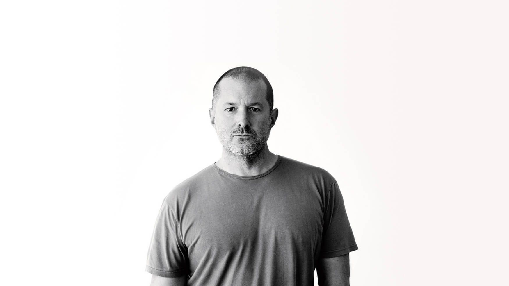}}

   <p>
      Jonathan Paul Ive, 27 Şubat 1967 doğumlu İngiliz endüstriyel ürün
      tasarımcısı ve mimari tasarımcıdır. iPod&#39;dan iPhone&#39;a birçok Apple
      ürününün tasarımına imza atan Jonathan Ive, firmanın kurucusu olan Steve
      Jobs tarafından &quot;markanın asıl ruhu&quot; olarak nitelendiriliyordu.
      Steve Jobs&#39;un ölümünden sonra Apple&#39;ın yönetim kurulu başkanı Tim
      Cook tarafından baş tasarımcılığa atanan Jonathan Ive, dünyada ürünleri en
      çok satan/kullanılan tasarımcıların başında geliyor.
   </p>
   <div class="row">
      <div class="col-md-4">
         {{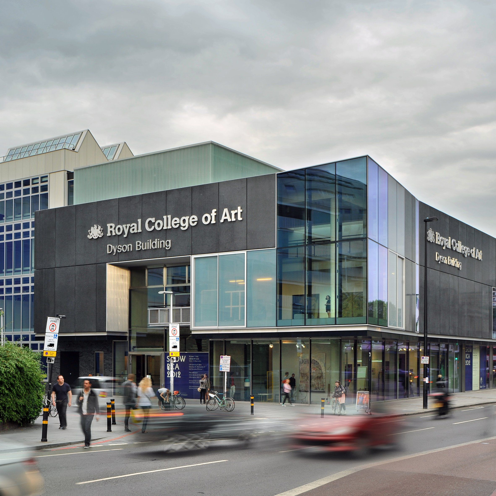}}
         <small>Royal College of Art | Londra</small>
      </div>
      <div class="col-md-4">
         <p>
            Jonathan Ive, Londra&#39;nın kuzeydoğusundaki Chingford kasabasında
            doğdu. Babası, Middlesex Yüksekokulu&#39;nda ders veren bir gümüş
            ustasıydı. Ive, ilk tasarım eğitiminin temellerini babasının
            atölyesinde aldı. Okul yılları sırasında arabalara tutkun olan
            Ive&#39;ın bu merakı onu tasarıma iten ilk güdüydü. Londra&#39;da
            araba tasarımı üzerine özel bir eğitim programı sunan Royal College
            of Art&#39;a kaydoldu, burada aradığını bulamayıp Newcastle
            Polytechnic&#39;te (Northumbria Üniversitesi) endüstriyel tasarım
            okumaya başladı. Bu dönemde yaptığı işitme cihazı gibi bazı
            tasarımları Londra&#39;daki ünlü Tasarım Müzesi Design Museum&#39;da
            sergilendi.
         </p>
      </div>
      <div class="col-md-4">
         {{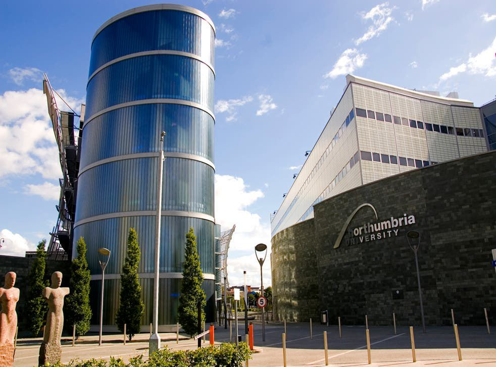}}
         <small>Newcastle Polytechnic (Northumbria Üniversitesi)</small>
      </div>
   </div>

   <div class="row">
      <div class="col-md-6">
         <p>
            Ive&#39;ın Polytechnic&#39;teki tasarımları ona RSA Öğrenci Tasarım
            Ödülünü kazandırdı ve bu ödülle ABD&#39;ye yaptığı gezideki
            harçlığını çıkardı. California&#39;ya gitti ve burada, Apple
            Computers&#39;a katılacak olan küçük bir danışmanlık firması işleten
            tasarımcı Robert Brunner da dahil olmak üzere çeşitli tasarım
            uzmanlarıyla tanıştı. Altı hafta sonra İngiltere&#39;ye döndüğünde
            kendisine eğitim bursu sağlayan Robert Weaver&#39;ın ürün tasarım
            ajansı Roberts Weaver Group&#39;ta staj yaptı. Burada tasarım
            detaylarına ve iş etiğine gösterdiği belirgin ilgi ile yöneticileri
            etkiledi. Newcastle Polytechnic&#39;ten en üst dereceyle mezun oldu.
         </p>
      </div>
      <div class="col-md-6">
         {{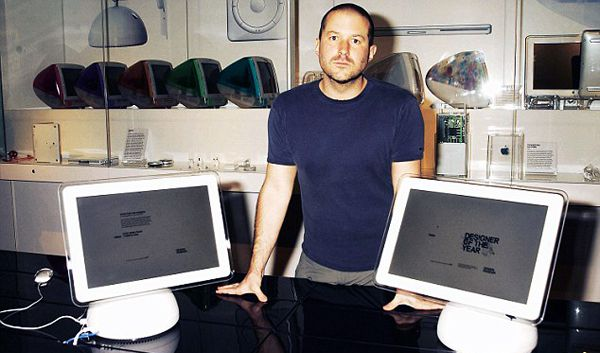}}
      </div>
   </div>

   <div class="row">
      <div class="col-md-6">
         <p>
            Roberts Weaver ile bir yıl geçirdikten sonra; mikrodalga fırın,
            tuvalet, matkap ve diş fırçası gibi çeşitli ürünler tasarladığı
            Tangerine adlı Londra merkezli tasarım ajansında çalışmaya başladı.
            Burada, müşterilerinden biri olan Ideal Standard için tasarladığı
            tuvalet ve lavaboya şirketin patronu, ürünlerin çok maliyetli
            olduğunu ve fazla modern göründüğünü söyleyerek Ive&#39;ın işini
            reddetti. Ive ise hoşlanmadığı ve fikirlerini beğenmediği
            müşterilerle çalışmaktan hoşnut değildi.
         </p>
      </div>
      <div class="col-md-6">
         {{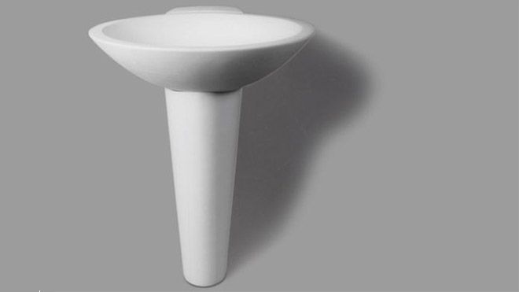}}
      </div>
   </div>

   <div class="row">
      <div class="col-md-7">
         <p>
            1990&#39;dan 1992&#39;ye, Apple, Tangerine&#39;in müşterisi oldu ve
            Ive, firmanın ilk PowerBook tasarımlarına öncülük etti. Bu süre
            zarfında Robert Brunner, Ive&#39;ı Apple&#39;a almaya çalıştı. Eylül
            1992&#39;de resmen Apple&#39;a tam zamanlı çalışan olarak alındı.
            Apple&#39;ın endüstriyel tasarım grubundaki ilk büyük görevi,
            Newton&#39;un ikinci neslini ve MessagePad 110&#39;u ele aldı.
         </p>
         <p>
            1990&#39;ların başındaki ilk tasarım başarısızlıkları Ive&#39;ı
            birçok kez işi bırakmaya sürükledi. 1985&#39;te diğer Apple
            yöneticileri tarafından görevden alınan Steve Jobs, şirkete dönüş
            planlıyordu ve firmayı farklı bir yöne götürmede ona yardım etmesi
            için Ive&#39;ı işe aldı. Ive&#39;ın o zamanki patronu Jon
            Rubinstein, Apple&#39;ın 1996&#39;da şirketin yeniden canlanmasının
            ardından &quot;tarih yazacağını&quot; söyleyerek Ive&#39;ı bir
            çalışan olarak tutmayı başardı.
         </p>
      </div>
      <div class="col-md-5">
         {{}} 
         <small>Robert Brunner</small>
         <blockquote>
            <p>
               &quot;Öldüğümde mezar taşımın üzerine &#39;işte Jonathan
               Ive&#39;ı bulan adam&#39; yazdıracağıma dair espriler
               yapıyorum.&quot;
            </p>
         </blockquote>
      </div>
   </div>

   {{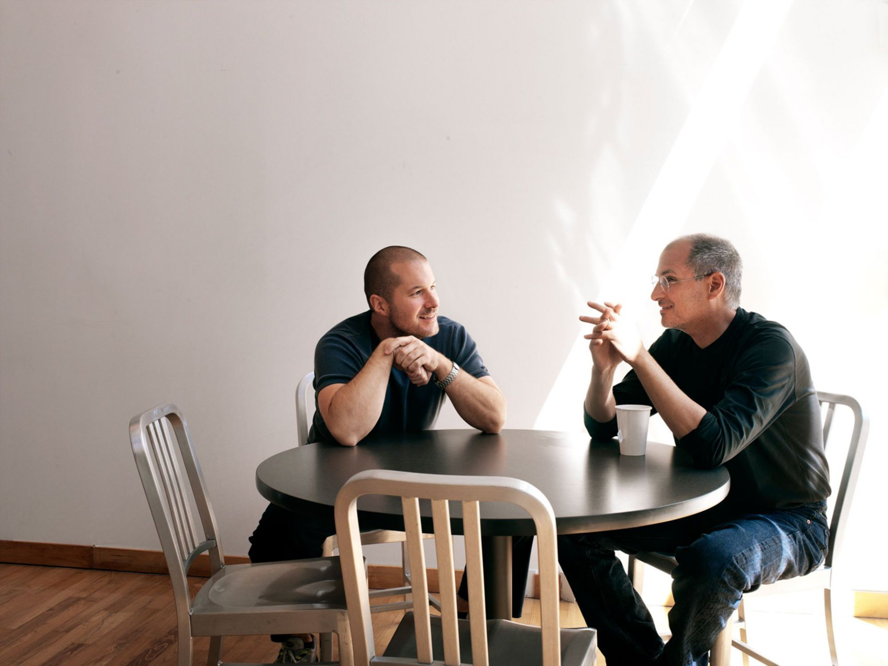}}
   <div class="text-center"><small>Jonathan Ive ve Steve Jobs</small></div>

   <blockquote>
      <p>
         &quot;Steve&#39;in düşünme biçiminde inanılmaz bir özgürlük vardı.
         Bilgelik olarak algılanan kurallara uymazdı. Olağanüstü bir iyimserliği
         ve coşkusu vardı, çok meraklıydı ve beni çok destekledi.&quot;
      </p>
   </blockquote>

   <div class="row">
      <div class="col-md-4">
         <blockquote>
            <p>
               &quot;İşimizin temel özelliklerinden biri, bir şeyi nasıl
               yaptığınızla çok ilgili olmamızdır: sadece soyut olarak
               tasarlayıp sonra başkasına yapmasını söyleyemezsiniz. İşlerini
               sevdiğiniz moda tasarımcılarından bilirsiniz: her adımda
               oradalar. Aylarca ürün yaptığımız yerlerde kaldım. Nasıl etkili
               bir tasarımcı olup da bunu yapamazsınız bilmiyorum.&quot;
            </p>
         </blockquote>
         {{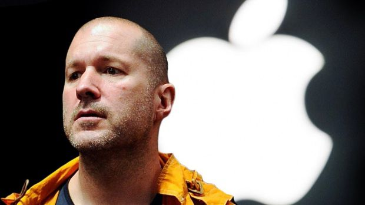}}
      </div>
      <div class="col-md-4">
         <p>
            Jobs&#39;un dönüşünden sonra Ive, 1997&#39;de endüstriyel tasarım
            kıdemli başkan yardımcısı oldu ve ardından şirketin önemli donanım
            ürünlerinin büyük çoğundan sorumlu endüstriyel tasarım ekibine
            başkanlık etti. Ive&#39;ın bu kapasitedeki ilk tasarım görevi,
            1998&#39;de piyasaya sürülen iMac&#39;ti. iMac, iPod ve nihayetinde
            iPhone ve iPad gibi diğer birçok tasarımın önünü açtı. 2014&#39;te
            Jobs&#39;la yakın ilişkisini şu şekilde açıkladı: &quot;Nesnelere
            baktığımızda, gözlerimizin fiziksel olarak gördüğü ve algıladığımız
            şey tamamen aynıydı. Ve aynı soruları sorardık, bir şeyler hakkında
            aynı merak.&quot;
         </p>
      </div>
      <div class="col-md-4">
         {{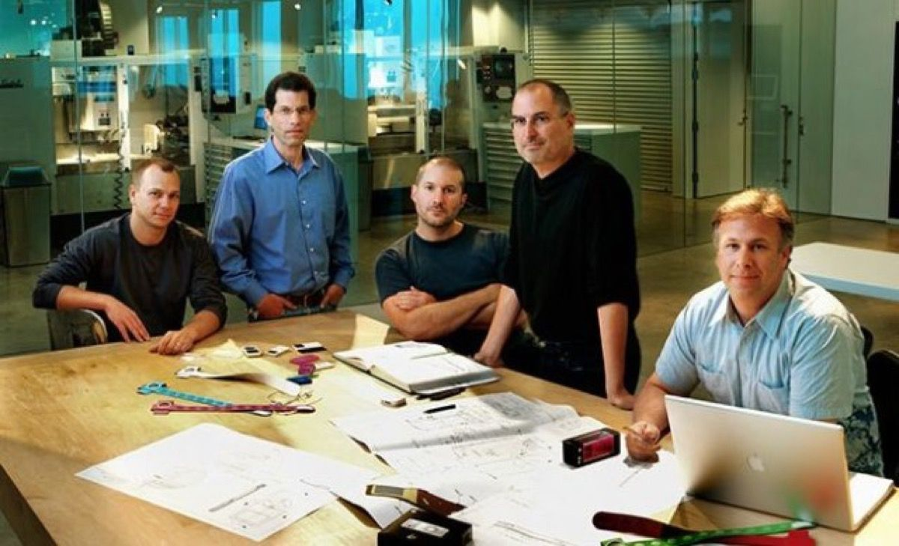}}
         <small>Jonathan Ive ve ekibi</small>
         <p>
            2000&#39;li yılların başında Apple&#39;da, tasarım ekibinin
            çalışmalarını denetleyen Ive&#39;a şahsi tasarım ofisi verildi. Ive;
            özel ofisi olan tek Apple tasarımcısıydı. 20 yıldır beraber
            çalıştığı yaklaşık 15 kişilik çekirdek ekibi ve üst düzey Apple
            yöneticilerinin ofise girmesine izin verildi; ailesi dahil ofisine
            girmiyordu. 2011&#39;de Ive&#39;a, yıl için toplam tazminat olarak
            25 milyon dolarlık hisse senedi ikramiyesi ile birlikte 30 milyon
            dolar maaş ödendiği bildirildi. Bir yıl sonra servetinin 80 milyon£
            olduğu tahmin edildi.
         </p>
      </div>
   </div>

   <h2 id="ürün-tasarımları">Ürün Tasarımları</h2>
   <div class="row">
      <div class="col-md-6">
         {{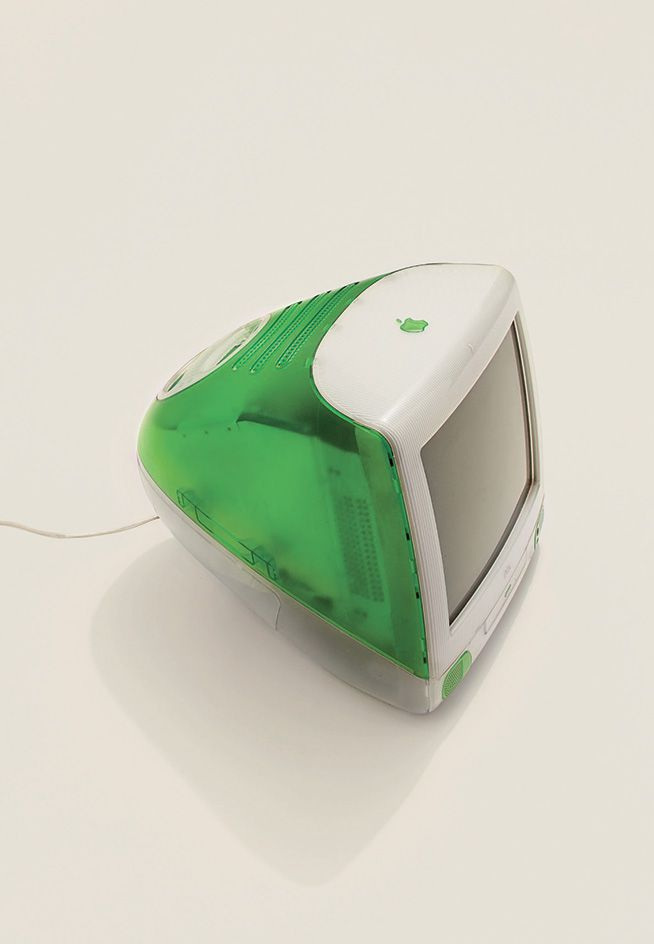}}
         <small>iMac G3, 1998, Jonathan Ive</small>
      </div>
      <div class="col-md-6">
         {{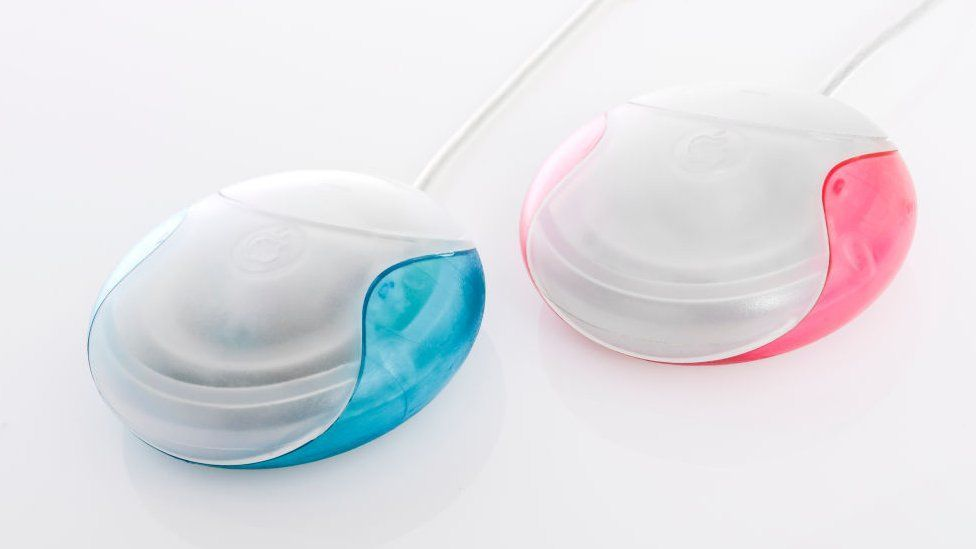}}
         <small>Hockey Puck Mouse</small>
      </div>
   </div>

   <div class="row">
      <div class="col-md-6">
         <p>
            Cesur, yarı saydam renkli kabuğuyla 1998 iMac G3 çok iyi geri
            dönüşler aldı. Ne yazık ki USB fare aksesuarı için aynı şey olmadı.
            Dairesel tasarımı, kullanımı zor olduğu için alay edildi ve belirgin
            bir üst veya alt kısım olmadığı için, hareket ederken farenin doğru
            yönü gösterdiğini bilmek zordu. Ancak iMac G3&#39;ün kendisi çok
            başarılıydı ve sonunda 13 farklı renk şemasıyla geldi.
         </p>
      </div>
      <div class="col-md-6">{{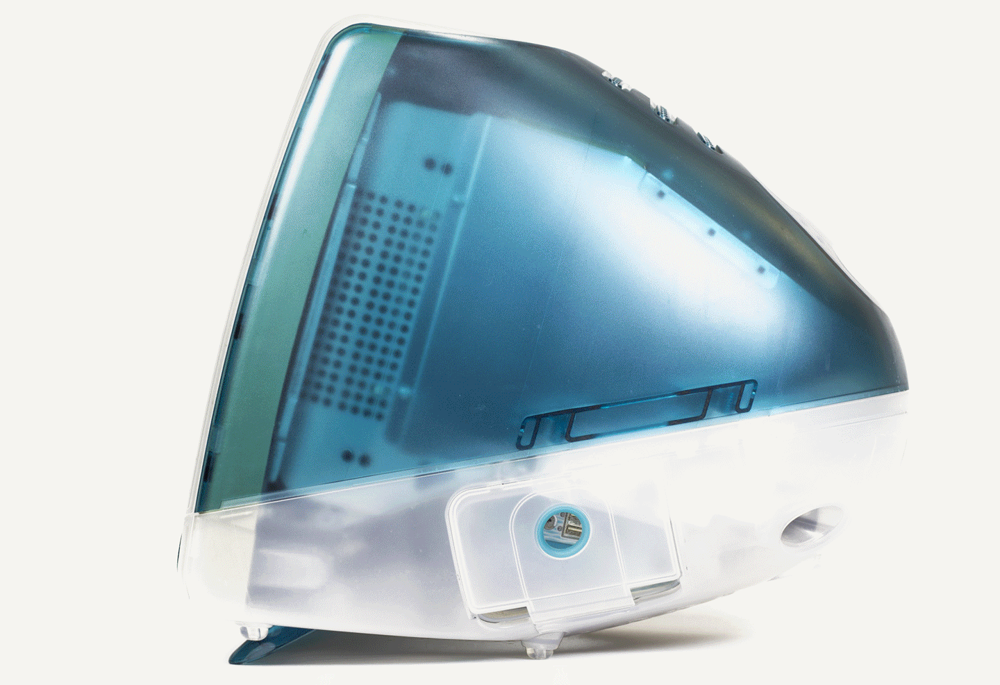}}</div>
   </div>

   {{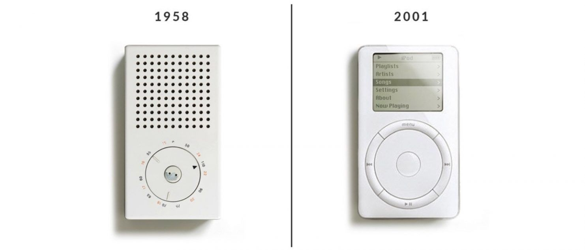}}
   <div class="row">
      <div class="col-md-6">
         <p>
            1961&#39;den 1995&#39;e kadar Braun&#39;un baş tasarımcısı olan
            Dieter Rams&#39;ın çalışmaları ve ilkeleri, Ive&#39;ın çalışmalarını
            etkiledi. Gary Hustwit&#39;in Objectified adlı belgesel filminde
            Rams, Apple&#39;ın bugün var olan ve kendine ait iyi tasarımın on
            ilkesine göre ürünler tasarlayan birkaç şirketten biri olduğunu
            söylüyor. Aynı zamanda 1920&#39;lerde Almanya&#39;da ortaya çıkan
            temel bir tasarım yaklaşımı olarak Bauhaus ekolünden de etkilendiği
            görülüyor.
         </p>
      </div>
      <div class="col-md-6">{{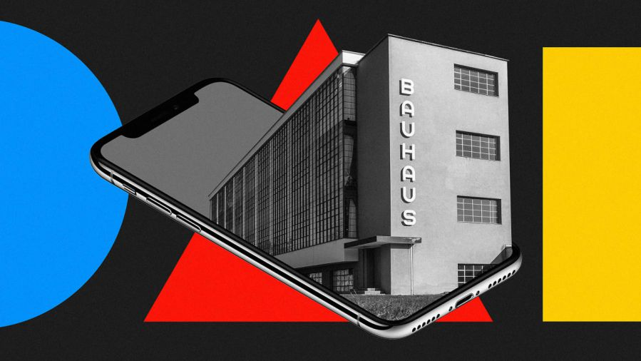}}</div>
   </div>

   <div class="row">
      <div class="col-md-6">
         <blockquote>
            <p>
               Ive, bir hayır kurumu müzayedesine HIV/AIDS için, dünya rekoru
               açık artırma fiyatı belirleyen bir Leica kamera ve dünyada sadece
               üç tane olan Jaeger-LeCoultre spor saati de dahil olmak üzere,
               hayır işleri için ürünler tasarladı. Bu müzayede sırasında, Ive
               ve Marc Newson, Bono&#39;s Product Red hayır kurumu için 13
               milyon dolar topladı.
            </p>
         </blockquote>
      </div>
      <div class="col-md-6">{{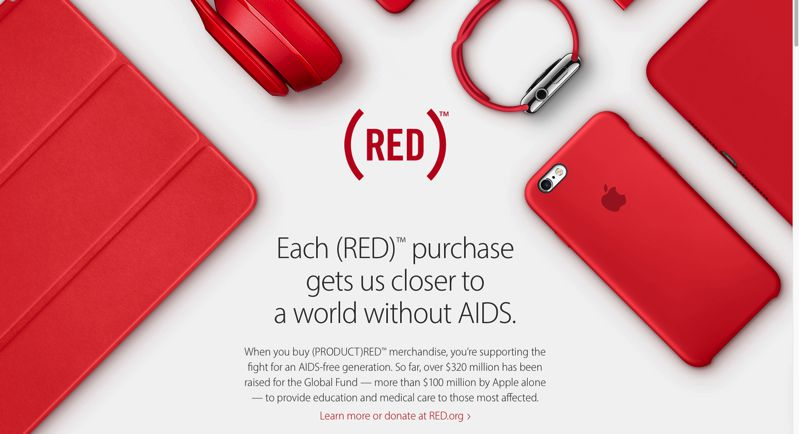}}</div>
   </div>
   <div class="row">
      <div class="col-md-6">{{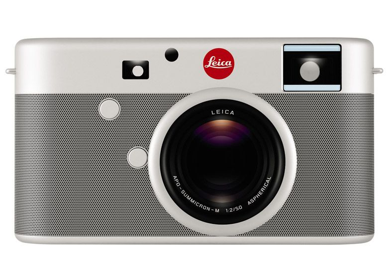}}</div>
      <div class="col-md-6">
         {{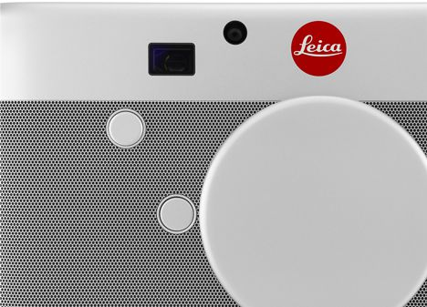}}
      </div>
   </div>

   <p>
      2012&#39;de Apple, Ive&#39;ın endüstriyel tasarımdaki lider rolüne ek
      olarak şirket genelinde İnsan Arayüzü (HI) tasarımını yöneteceğini
      duyurdu. 2013 Dünya Çapında Geliştiriciler Konferansı (WWDC) ile iOS 7 ve
      Ive&#39;ın müdür olarak rolünün duyurulacağı şekilde Apple basın bilgileri
      güncellendi. Aynı basın güncellemesinde Ive, en iyi eserinin henüz ortaya
      çıkmadığını umduğunu ve tasarımcıdan ziyade ürün üreticisi olarak anılmayı
      tercih ettiğini belirtti.
   </p>

   <h3 id="appledan-sonra">Apple&#39;dan Sonra</h3>
   <div class="row">
      <div class="col-md-6">
         <p>
            Apple, 27 Haziran 2019&#39;da Ive&#39;nin şirketten ayrılacağını ve
            Apple&#39;ın endüstriyel tasarımcısı Marc Newson ile birlikte
            birincil müşterisi olarak çalışacak olan LoveFrom adlı bağımsız bir
            firmaya başlayacağını duyurdu. LoveFrom&#39;un resmi bir web sitesi
            yok ve kaç kişiyi istihdam ettiğini açıklamıyor. FT ile yaptığı
            röportajda Ive, &quot;Birkaç yıl önce bir çalışan toplantısı vardı
            ve Steve konuşuyordu. Temel motivasyonlardan birinin, muhtemelen
            asla tanışamayacak olsanız bile, o insanlar için bir şeyleri
            sevgiyle ve özenle yaparak insanlığa minnettarlığınızı ifade
            ediyorsunuz.&quot;. Ive, kendisini bu motivasyonla özdeşleştirdiğini
            ve Jobs&#39;un bakış açısına hayran kalarak yeni şirketini LoveFrom
            olarak adlandırmasının nedeninin bu olduğunu söyledi.
         </p>
      </div>
      <div class="col-md-6">
         {{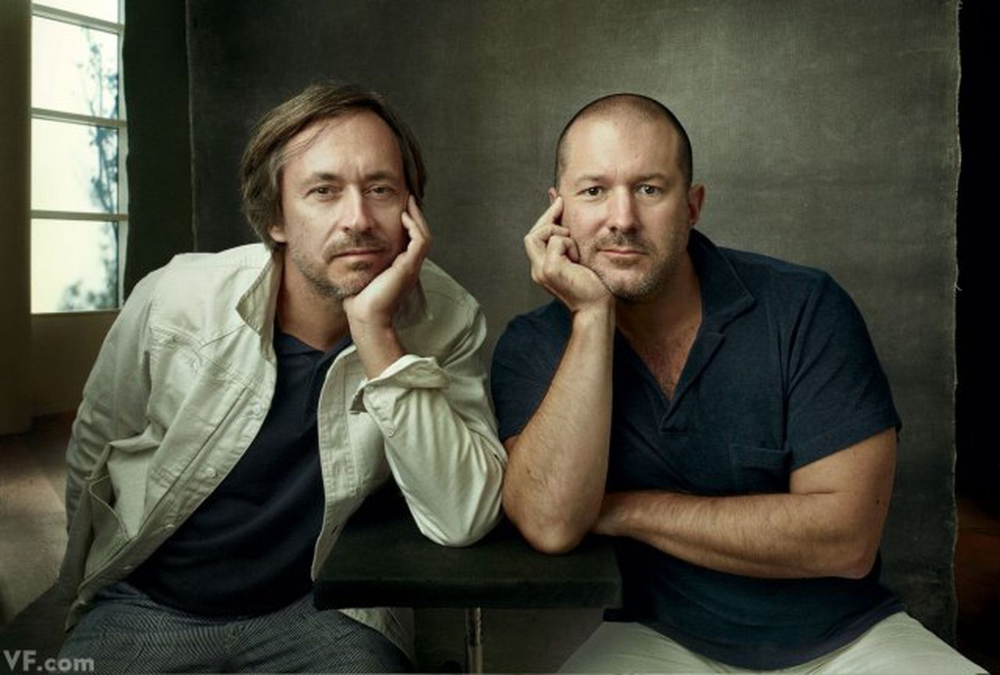}}
         <small>Mark Newson ve Jonathan Ive</small>
      </div>
   </div>

   <h3 id="apple-ve-endüstriyel-tasarım">Apple ve Endüstriyel Tasarım</h3>
   <div class="row">
      <div class="col-md-4">
         <p>
            &quot;Apple’daki Endüstriyel Tasarım ekibi, ilk konseptten
            titizlikle tasarlanmış nihai ürünün üretimine kadar, ürün geliştirme
            sürecinin her aşamasında çok önemli bir rol oynar. Bu ekip,
            detaylara gösterdikleri olağanüstü dikkatin yanı sıra malzemeleri,
            üretim süreçlerini ve kullanılacak renklerle kaplamaların son
            hallerini seçmek için faydalandıkları yüksek kalite standartlarıyla
            dünyaca ünlüdür. Ürettikleri projeler ürün kategorilerinin de
            ötesine geçerek, aksesuar ve ambalajların tasarımının yanı sıra
            Apple’ın perakende satış deneyimini de destekler.&quot;
         </p>
      </div>
      <div class="col-md-4">
         {{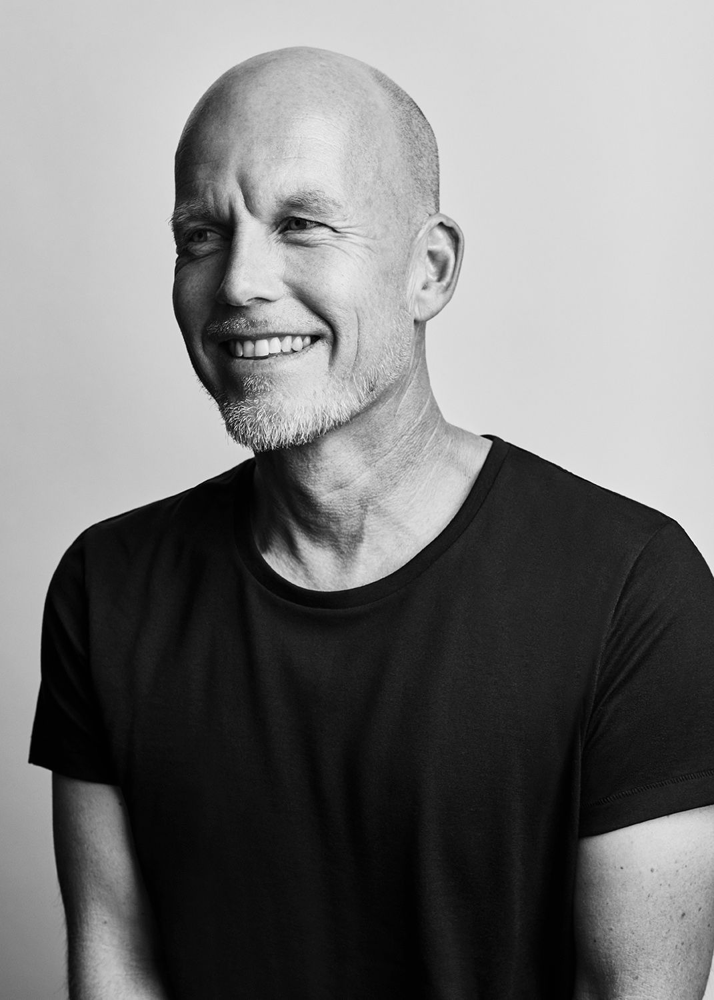}}
         <blockquote>
            <p>
               &quot;Tasarımı Apple için rekabetçi bir araç olarak öne sürmek
               istedik ancak tasarımın neler yapabileceğini kimse tam olarak
               farkında değildi. Tasarım grubunda bizden büyük bir beklenti
               vardı: Apple farklıdır, Apple her zaman farklı olmuştur.&quot;
               Thomas Meyerhoffer, Kıdemli Endüstriyel Tasarımcı
            </p>
         </blockquote>
      </div>
      <div class="col-md-4">
         <p>
            &quot;Apple ürünleri mükemmel çalışır. Çünkü tasarımcılarımız, her
            şeyden önce yalınlığa ve kullanışlılığa odaklanır. Yaptıkları işin
            başarısını, o işe kattıkları şeylerle değil, kullanıcının
            kazanımları üzerinden değerlendirirler.&quot;
         </p>
      </div>
   </div>

   <button
      class="btn markutbtn"
      data-target="#my-collapse"
      data-toggle="collapse"
      aria-expanded="false"
      aria-controls="my-collapse"
   >
      Kaynaklar
   </button>
   <div id="my-collapse" class="collapse">
      <pre> <small><code>  

https://www.wallpaper.com/fashion/paul-smith-50-favourite-things-phaidon-book

https://en.wikipedia.org/wiki/Jony_Ive

https://www.apple.com/careers/tr/teams/design.html

https://www.vogue.co.uk/article/naomi-campbell-jonathan-ive-interview

https://www.bbc.com/news/technology-48799162

https://www.businessinsider.com/apple-jony-ive-design-lovefrom-steve-jobs-2019-6

görseller:

https://miro.medium.com/max/875/1*BOdYuWHgegd9SY4YPHt9Qw.png

https://www.google.com/url?sa=i&url=https%3A%2F%2Fwww.dezeen.com%2F2017%2F03%2F13%2Fmit-massachusetts-institute-technology-world-best-top-university-architecture-third-year-running-us-news%2F&psig=AOvVaw2uSx2oTAwAByyWVMB_mda-&ust=1628611042630000&source=images&cd=vfe&ved=0CAsQjRxqFwoTCJCU-oenpPICFQAAAAAdAAAAABAJ

https://static.independent.co.uk/s3fs-public/thumbnails/image/2013/07/18/15/4768838560_dd3c434b3d_b.jpg?width=990&auto=webp&quality=75

https://jonyive.weebly.com/uploads/1/8/9/7/18973751/6810735.jpg?489

https://ichef.bbci.co.uk/news/976/cpsprodpb/17BB8/production/_107580279_jivesink.jpg

https://www.google.com/url?sa=i&url=https%3A%2F%2Ftwitter.com%2Frdbrunner%2Fstatus%2F728265426002546688&psig=AOvVaw1IHjL1oJ-W6Lpqbh7SoQ22&ust=1628611204946000&source=images&cd=vfe&ved=0CAsQjRxqFwoTCNDE6NSnpPICFQAAAAAdAAAAABAD

https://stocklandmartel.blob.core.windows.net/media/images/ARS00123.jpg

https://lh3.googleusercontent.com/dEd4RU-lG9T883xtJilhxREzh9vUPG1nMnNzAfH8YDzqq121q5PsDlh8QA5-qM-wL0BD=s151

https://www.macitynet.it/wp-content/uploads/2017/01/iPhone-10-anni-1.jpg

https://domusnovem.com/wp-content/uploads/2018/05/10-principles-of-good-design-1482x635.jpg

https://images.fastcompany.net/image/upload/w_1153,ar_16:9,c_fill,g_auto,f_auto,q_auto,fl_lossy/wp-cms/uploads/2020/03/p-1-90472162-apple-bauhaus-design.jpg

https://cdn.iphoneincanada.ca/wp-content/uploads/2016/01/product-red.png

https://www.dezeen.com/2013/10/09/leica-camera-by-jonathan-ive-and-marc-newson/

https://www.vanityfair.com/news/business/2013/11/jony-ive-marc-newson-design-auction
  </code></small></pre>
   </div>
</div>
